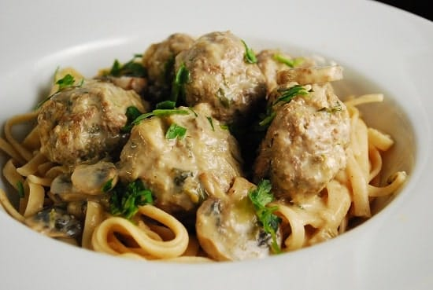

Swedish Meatballs

The Ikea of balls
Ingredients
- 1 egg
- ¼ cup milk
- 1 pound ground beef
- ¼ cup dry cream of wheat cereal
- ¼ cup minced onion
- 1 (10.75 ounce) can condensed cream of chicken soup
- 1 (10.75 ounce) can condensed cream of mushroom soup
- 1 (12 fluid ounce) can evaporated milk
- 1 tablespoon chopped fresh parsley
Directions
- Preheat oven to 350 degrees F (175 degrees C)
- In a large bowl, whisk together the egg and the milk. Add the beef, cream of wheat and onion and mix well. Shape into 1 inch balls. Place balls on a lightly greased baking sheet
- Bake at 350 degrees F (175 degrees C) for about 20 minutes
- Drain meatballs on paper towels, if needed. Then place meatballs in a lightly greased 2 quart casserole dish. In a separate medium bowl, combine the soups with the evaporated milk, stirring until smooth. Pour over the meatballs
- Bake uncovered at 350 degrees F (175 degrees C) for another 40 minutes. Sprinkle with parsley before serving
Main Page